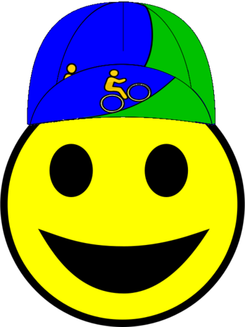

|  |
Thanks for coordinating a Low-Key Hillclimbs! These are a few notes on how to make a climb go super-smoothly.
Some details needed for a start location, which need not be at the actual starting point, as a promenade can be organized between the two. Also, where will registration happen? Picnic tables are a great option, if available.
We need to determine where the finish line will be, and where the food will be available. Sometimes it's better to separate the two to avoid congestion, although this increases the challenge of getting finishing times. However, collection of index cards at the finish line helps.
The finish line should be as close to the top of the climb as possible while providing room for riders to slow down after a sprint. Putting the finish at the exact top of the hill can make getting numbers challenging, so sufficiently before a following descent so that there's a few seconds for the rider to shout his number is best. There's often no perfect placement but pick one and go with it.
We've been great at attracting volunteers. Don't panic if you don't have many with more than a week to go. Most people don't like committing before the week prior. However, it helps to send out emails asking for help, or directly ask friends or family. All expenses are reimbursable.
We used to print registration forms early, but with the RSVP system, this typically can't be done until pre-registration closes, so forms now need to be printed on Friday.
However, waivers can be printed ahead of time. Around half or riders bring pre-printed waivers, so if the field limit is 150, it's good to have at least 75 on hand. We used to pre-fill the week's climb, but keeping the form blank allows reuse of unused forms.
It's nice if you're able to pre-ride the course in the days before, or perhaps weekend before the climb, or check with someone who's ridden it recently, in case any unusual conditions exist, like road construction, road damage, etc. It's also good to know if any other big events are occurring the day of the climb which may increase vehicular traffic or otherwise affect bicycle access.
If you have a good volunteer turnout, course marshals are a great addition to an event, and one reason you can never have too many volunteers! Course marshals point out navigational challenges, warn of dangerous road sections, or warn of cross traffic. An example of where a marshal is a must is the left-hander from On Orbit onto Bohlman. We wouldn't use this climb without a marshal there.
Healthy snacks like those sold at Trader Joes are great. Also Trader Joes sells a nice selection of natural juices, which are really good. Jugs of water are also a must if no water will be available near the finish line. Make sure we have an inventory of paper cups. Bananas are also a tradition, around 1 per 2 riders is about right. Other fruits may also be substituted. Pretzels and healthy cookies are both popular. Feel free to be creative!
Thank volunteers, and remind them to be there 15 minutes before registration opens.
Get everything set up, get volunteers coordinated, and make sure everyone understands the procedure. For example, how "returning riders" include anyone who's ridden a climb since 2006, who gets to ride for "free" (juniors, volunteers with remaining credits, coordinators of other weeks during the year, and those who object to paying). Get the forms set up, make sure pens are available, establish who will mind the cash box. Ready to go!
Registration forms:
If there are additional vehicle(s) for finish line volunteers, send them up the road adhead of time, to avoid start-line congestion. These cars may also transport course marshal(s), if you have any available.
At around the start time, which is 10 minutes after the "official" close of registration, organize riders for the start. How this is done depends on the type of start, and whether there is a promenade. But it's important to shout instructions to the riders. Key points:
How this happens depends on the event. For a typical mass-start, start the car, then honk the horn indicating riders should start, so the lead riders don't swarm you. Then up the hill you go. Drive safely!
For many climbs it's better to start in small groups, to avoid large groups during the climb which can present a traffic hazard.
For small groups optimally there should be three people:
Remember that start times are as important as finish times for accurate results and so we want one-second accuracy on these.
Individual time trials have the starting volunteer write the number next to the start time, which is different. Optimally again three volunteers: one to start riders, one to record numbers next to the start time, and one to help organize people to make sure riders are lined up starting two minutes before their start. When we do time trial starts we send riders off on very tight intervals to get through everyone, so organization is really critical.
If possible, this should go far enough from the finish line to avoid congestion.
First, the physical set up: put cones on each end of the line, and if you think it will be okay, paint a line with spray-on chalk or with tape. Riders love a finish line! Also, place Barry's "What's your number" and "200 meters to go!" signs if possible.
Then, the human set-up. You want at least 4 finish people. They have the following tasks:
Of course, on all finish forms, handwriting is key! It also helps to record notes about finishing riders, for example names of those whom are recognized, or other obvious details like "tandem" or "unicycle".
Key for the finish is that volunteers can hear riders shout their numbers so food distribution should be past the line, not just before.
Draft rule: Early finishers are eligible for recruitment to help with results if assistance is required.
Low-Key has been given Google Android phones with Ultrachron timing software!
Thanks to Pat Parseghian for these fantastic UltraChron tips.
When you're confident all riders have likely finished, do a check of the results sheets for consistency. One set of sheets should include all times and numbers. Check the cards, if possible, to make sure there's agreement with the written sheets. Then give the results to Dan Connelly for results preparation. Thanks!!!!
Cash in excess of expense money goes to the treasurer (Patt Baenen) or to the treasurer's assistant (Pat Parseghian) or to Dan Connelly.
The "Climb in a Box" should be transferred to the next coordinator, or to someone who will have the responsibility to deliver it to the next climb.
| Emergency Phone Numbers | |
|---|---|
Without you, the Low-Key Hillclimbs would not happen. We hope you can coordinate again next year!